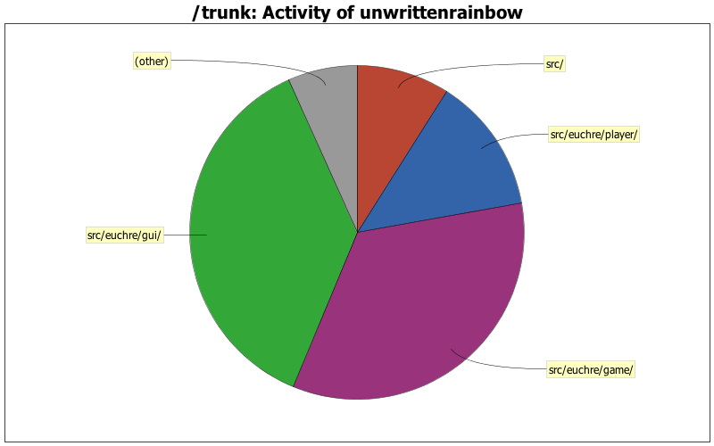

| Directory | Changes | Lines of Code | Lines per Change |
|---|---|---|---|
| Totals | 233 (100.0%) | 4916 (100.0%) | 21.0 |
| src/euchre/gui/ | 40 (17.2%) | 1823 (37.1%) | 45.5 |
| src/euchre/game/ | 93 (39.9%) | 1674 (34.1%) | 18.0 |
| src/euchre/player/ | 40 (17.2%) | 648 (13.2%) | 16.2 |
| src/ | 31 (13.3%) | 442 (9.0%) | 14.2 |
| src/euchre/gameLogic/ | 20 (8.6%) | 195 (4.0%) | 9.7 |
| src/euchre/network/ | 5 (2.1%) | 99 (2.0%) | 19.8 |
| / | 3 (1.3%) | 23 (0.5%) | 7.6 |
| .settings/ | 1 (0.4%) | 12 (0.2%) | 12.0 |

Completely fixed and implemented AI spawning.
21 lines of code changed in 2 files:
8 lines of code changed in 1 file:
45 lines of code changed in 1 file:
36 lines of code changed in 2 files:
37 lines of code changed in 1 file:
4 lines of code changed in 1 file:
28 lines of code changed in 1 file:
18 lines of code changed in 1 file:
3 lines of code changed in 1 file:
implemented ai spawning functionality.
17 lines of code changed in 1 file:
11 lines of code changed in 1 file:
17 lines of code changed in 2 files:
7 lines of code changed in 1 file:
3 lines of code changed in 1 file:
42 lines of code changed in 1 file:
65 lines of code changed in 1 file:
1 lines of code changed in 1 file:
29 lines of code changed in 2 files:
8 lines of code changed in 1 file:
11 lines of code changed in 2 files:
(75 more)